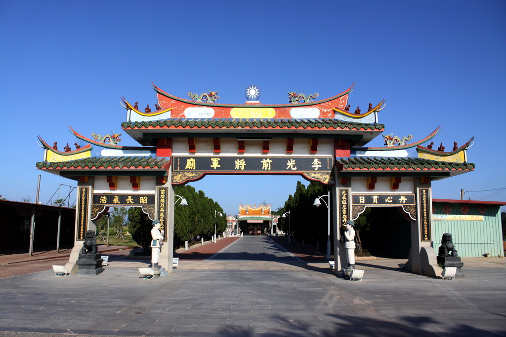

李光前將軍廟

介紹
李光前將軍廟是為了紀念在古寧頭戰役中奮勇殺敵，壯烈犧牲的李光前團長而建的祭祀廟宇。李光前是湖南省平江縣人，畢業於中央軍校第16期。民國38年9月升任第14師42團團長，同年在古寧頭戰役中，
在台灣軍方身處劣勢之際，仍率領部隊奮勇殺敵，不幸壯烈犧牲。古寧頭戰役結束後，當地鄉民感念官兵英勇護國護民，訂每年農曆九月初八在村外祭祀陣亡官兵；
後來地方百姓在李光前殉國處立牌建廟塑像奉祀，供奉李光前將軍為主神，塑像身穿草綠色軍服，戴著有青天白日帽徽的軍帽，村人視其為古戰場的守護神，
追諡為李將軍。民國60年政府補助擴建，民國86年再次規劃、重建，在廟前豎立石碑，表示此處是李光前團長殉國之處。
遊客路過此地，不妨到廟裡向李將軍參拜，據說只要是正當的祈求，常會讓民眾心願達成，到金門千萬不要忘記向李將軍參拜一下。
相關影片
地圖